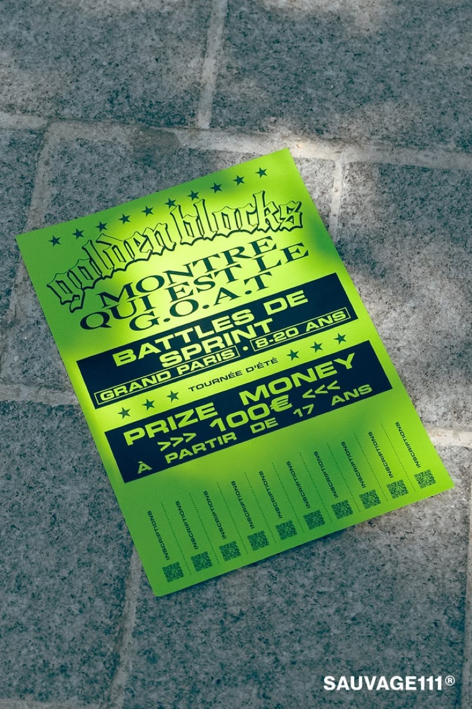

A안 기본형 — 고정 QR 하나. 학교별 QR 5종이면 끝나요.

B안 QR 클럽 티켓형 — 하단 절취선 티켓 10장. 본문 고정 QR은 그대로 둬요.
| 헤드라인 | 작품도, 프로필도 뽐내봐 |
| 작은 문구 | 여기는 크리에이터클럽 |
| 서브문구 | 매주 즐거운 혜택 |
| 참여 대상 | Cre8orClub 앱 가입자 누구나 |
| 모집처 | Cre8orClub 앱 |
| 참여 방법 | ① 앱 가입 ② 프로필 꾸미기 · 작품 올리기 |
| QR 옆 | QR을 찍고 참여 방법과 이번 주 혜택을 확인하세요. |
| 맨 아래 | 보상은 주차마다 다르거나 없을 수 있어요. |
| 티켓(B) | CRE8OR CLUB · 클럽 티켓 No.03 · 청강 + QR |

빌린 레퍼런스 — Golden Blocks(파리 스프린트 배틀). 하단 「INSCRIPTIONS」 절취 QR 띠지 구조만 빌리고, 상금 표기는 빌리지 않아요.